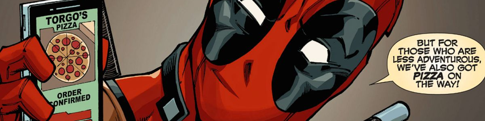

| HOME | ABOUT | COMMUNITY | SHOP |
 |
DEADPOOL |
|||||||||||||||
|
Ever-quipping mercenary Wade Wilson’s healing factor—and big mouth—make him one of the most relentlessly wisecracking heroes in the universe. Deadpool is the character that this wiki is based off of. He stars in several comics, first appearing in New Mutants #98 back in February 1991. Deadpool, also known as Wade Wilson, was created by artist and writer Rob Liefeld, as well as writer Fabian Nicieza. He was originally depicted as a supervillain in both New Mutants and X-Force, but has since become an antihero. He is disfigured and mentally unstable with chunks of memory missing. Deadpool is known under the editorial names Merc with a Mouth and Regenerating Degenerate thanks to his talkativity and constant breaking of the fourth wall for comedic effect. Deadpool's popularity has increased over time. |
||||||||||||||||
HISTORY | ||||||||||||||||
| Deadpool first appeared in The New Mutants #98 in February 1991. Rob Liefeld came up with the character's design and name while Nicieza came up with Deadpool's speech mannerisms. Liefeld, who was a fan of Teen Titans, showed the character to Fabian. Upon examination, Liefeld that "he was Deathstroke from Teen Titans", and gave him the real name of "Wade Wilson" as a reference to Slade Wilson, aka Deathstroke. Yet another inspiration to Deadpool was Spider-Man, who would make jokes during fights as well. Deadpool is a character that is related to multiple superheros. It is shown in the comics that Deadpool has a crush on spiderman. | ||||||||||||||||
PUBLICATION HISTORY | ||||||||||||||||
| In 1997, Deadpool was given his own ongoing title, initially written by Joe Kelly, with then-newcomer Ed McGuinness as an artist. Deadpool became an action comedy parody of the cosmic drama, antihero-heavy comics of the time. The series firmly established his supporting cast, including his prisoner/den mother Blind Al and his best friend Weasel. The ongoing series gained cult popularity for its unorthodox main character and its balance of angst and pop culture slapstick and the character became less of a villain, though the element of his moral ambiguity remained. The writer Joe Kelly noted, "With Deadpool, we could do anything we wanted because everybody just expected the book to be cancelled every five seconds, so nobody was paying attention. | ||||||||||||||||
2000s | ||||||||||||||||
| Wade lasted until issue #69, at which point it was Relaunched as a new title by Gail Simone with a similar character called Agent X in 2002. This occurred during a line wide revamp of X-Men related comics, with Cable becoming Soldier X and X-Force becoming X-Statix. Simone notes that 'When I took the Deadpool job, the revamp hadn't been planned, so it was a complete surprise. Thankfully, we heard about it in time to make adjustments to the early scripts'. It appeared that Deadpool was killed in an explosion fighting the supervillain Black Swan. Deadpool's manager, Sandi Brandenburg later founded Agency X with a mysterious man called Alex Hayden, who took the name dubbed Agent X. Deadpool later returned to the series. Simone left the title after seven issues due to creative differences with the series editor, but then returned to conclude with issues 13-15. | ||||||||||||||||
FICTIONAL BIOGRAPHY | ||||||||||||||||
|
The character's back-story has been presented as vague and subject to change, and within the narrative he is unable to remember his
personal history due to a mental condition. Whether or not his name was even Wade Wilson is subject to speculation since one of his nemeses,
T-Ray, claims in Deadpool #33 that he is the real Wade Wilson and that Deadpool is a vicious murderer who stole his identity. There have
been other dubious stories about his history—at one point the supervillain Loki claimed to be his father.[58] Frequently, revelations are later
retconned or ignored altogether, and in one issue, Deadpool himself joked that whether he is actually Wade Wilson depends on which the writer or
the reader prefers. He has professed to be Canadian. The original story had him joining the Weapon X program after being kicked out of the United States Army Special Forces. In The Good, The Bad, And The Ugly, Deadpool found out that a villain named Butler was periodically harvesting his organs and erasing his memory with a powerful drug called Tabula Rasa to find a cure for cancer to cure his sister, who also got cancer. Butler has made a camp in North Korea called Camp 23 where clones of the x-men had their DNA merged with Deadpool's, and it was there that he had found out that he had a daughter named Eleanor Camacho with Carmelita Camacho(now deceased) |
||||||||||||||||
PERSONALITY | ||||||||||||||||
|
Deadpool is aware that he is a fictional comic book character. He commonly breaks the fourth wall, which is done by few other characters in the Marvel Universe,
and this is used to humorous effect. He often has conversations with his two internal monologues, which are shown as caption boxes in his panels; in Deadpool #28
it is revealed that the villain Doctor Bong, a foe of Howard the Duck, is the logical voice appearing in yellow captions, and in Deadpool Annual #1 (2014)
it is revealed that Madcap, a foe of Captain America, is the psychotic voice appearing in white captions with a typewriter serif. Deadpool is depicted as having an accelerated healing factor, which not only prevents him from being permanently injured through enhanced cell regeneration throughout his body, but also causes psychosis and mental instability, as his neurons are also affected by the accelerated regeneration. It is thought that while his psychoses are a handicap, they are also one of his assets as they make him an extremely unpredictable opponent. Taskmaster, who has photo-reflexive memory which allows him to copy anyone's fighting skills by observation, was unable to defeat Deadpool due to his chaotic and improvised fighting style. Taskmaster has also stated that Deadpool is an expert at distracting his opponents. The character, known for his talkative nature, has been nicknamed the "Merc with a Mouth". Deadpool has sometimes been portrayed to have a strong sense of core morality. In Uncanny X-Force, he storms out after Wolverine tries to rationalize Fantomexkilling Apocalypse, who was at the time in a child form. After Wolverine argues that Deadpool is motivated solely by money, Archangel reveals that Deadpool never cashed any of his checks. Deadpool is talkative and mentally unstable, having a humorous and goofy nature. |
||||||||||||||||
POWERS AND ABILITIES | ||||||||||||||||
|  | ||||||||||||||||
|
Deadpool's primary power is an accelerated healing factor,( It gives him the ability to not die) depicted by various writers at differing
levels of efficiency. Artificially endowed by the Weapon X program, this enables him to regenerate any destroyed tissue at a superhuman rate,
as well as making him immune to diseases. Deadpool's healing factor is strong enough that he has previously survived complete incineration and
decapitation more than once. Although his head normally has to be reunited with his body to heal the wound,he was able to regrow his head after
having it pulverized by the Hulk. Deadpool's brain cells are similarly affected, with dying neurons being rejuvenated at a super accelerated rate. This allows Deadpool to recover from any head wounds, and it renders him nearly invulnerable to psychic and telepathic powers,although this ability is inconsistent. It has been revealed that at the time that his healing ability was given to him, Deadpool suffered from some form of cancer. After the healing factor was given to him, it made his normal cells as well as his cancerous cells unable to die, giving him a heavily scarred appearance beneath his suit. Deadpool's body is highly resistant to most drugs and toxins, due to his enhanced cell regeneration. For example, it is extremely difficult for him to become intoxicated. He can be affected by certain drugs such as tranquilizers, if he is exposed to a large enough dosage Deadpool is effectively immortal, although he has died several times. He is still alive 800 years in the future when the new X-Force encounters him. In addition, Thanos once declared that Deadpool should "consider yourself cursed ... with life!" out of jealousy over Deadpool's status as Lady Death's love interest.His enemy T-Ray later resurrected him, under Thanos' instruction, using an artifact he had given him. Later, Deadpool was informed that Thanos had placed a curse on him, and tracked Thanos down. He revealed that the only thing keeping Wade alive was his "spell of darkest necromancy". Although Thanos removed this curse in order to kill Deadpool, he felt forced to immediately bring him back using "a fusion of necromancy and science" in order to request his aid in tracking downMistress Death, who had gone missing. Deadpool is a highly trained assassin and mercenary, adept in multiple forms of martial arts, and an expert swordsman and marksman. Although in earlier years he was originally portrayed as having superhuman strength, he is no longer depicted as having this ability. Over the years, Deadpool has owned a number of personal teleportation devices. Also, during Deadpool's first ongoing comic, he possesses a device which projected holographic disguises, allowing him to go undercover or conceal his appearance. He also has a magic satchel containing all of his unlimited weaponry and ammo. Deadpool is multilingual, with the ability to speak fluently in German, Spanish, ASL and Japanese, in addition to his native English |
||||||||||||||||
GALLERY |
||||||||||||||||
|
||||||||||||||||
| ACTIVITY FOR Web Design and Scripting (JS/JQUERY) NATE FLORENDO BSEMC |
||||||||||||||||